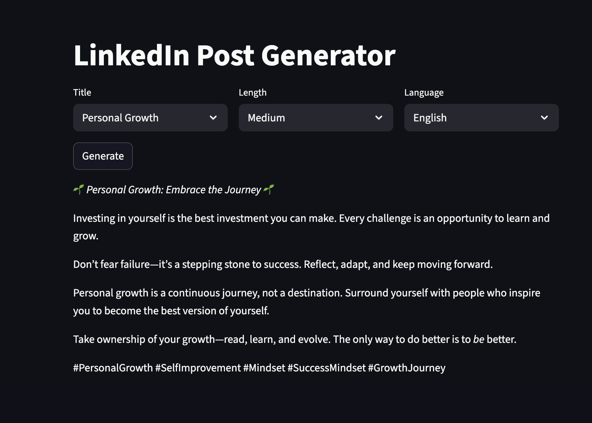

About the Project
This tool leverages Generative AI to help professionals create engaging and well-structured posts for LinkedIn. Users can input a topic or a key idea, and the AI will generate a complete post, including relevant hashtags and a call-to-action, tailored to the professional tone of the platform.
Key Features
- AI-powered content generation based on user prompts.
- Automatic inclusion of relevant industry hashtags.
- Ability to set the tone and style of the post.
- Saves time and helps overcome writer's block.